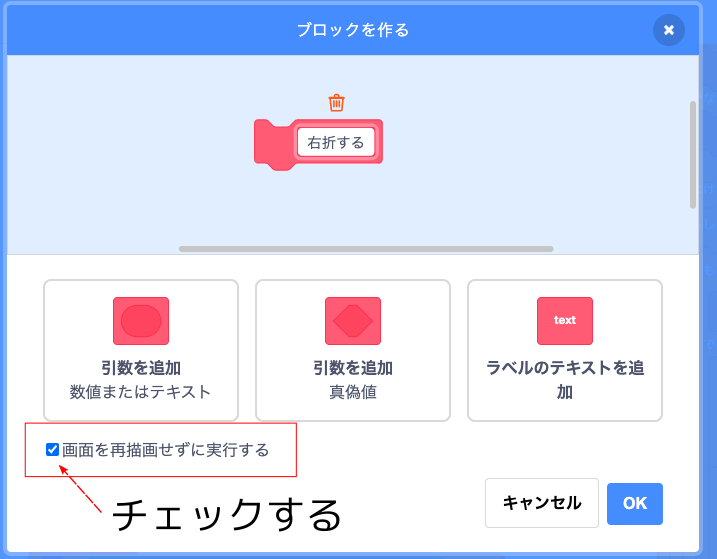
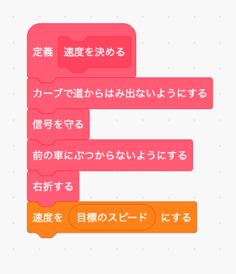

5. 右折する
これまで作ったプロクラムで前進と左折はうまく動くようになりましたが、右折しようとすると対向車にぶつかります。 そこで右折用のプログラムをここで作ります。
ただ、今の走行ルートは半時計回りになっていますので、次のように「走行ルートを決める」ブロックの中身を置き換えて時計回りのルートに変更して下さい。

置き換えたら試しに「緑の旗」ボタンを押して実行して下さい。 だいたいは対向車が気を利かせて止まってくれますが(多分かなり怒っています)、それでも時々対向車にぶつかると思います。
では「もし〜なら」ブロックの条件を考えてみましょう。
まず"右折"かどうかを調べるために「ナビの方向」「ナビの距離」を使います。 そのうえで対向車までの距離を検知する「前方-右センサー」センサーを使います。
目的：右折するときに対向車にぶつからない
必要な情報：「ナビの方向」「ナビの距離」「前方-右センサー」
必要で無い情報：その他の情報
よって条件の表は次のようになります。 なお右折をあらわす条件は「ナビの方向」が2(右折)、かつ「ナビの距離」が30未満としました。 また右折のときは対向車が優先なので、「前方-右センサー」の数値は前のページで使った「前方-左センサー」よりも少し遠目にしました。
| 「ナビの方向」 | 「ナビの距離」 | 「前方-右センサー」 | 「仮のスピード」 |
|---|---|---|---|
| 2(右折) | 30未満 | 30 より大 (遠い) | 50 |
| 30以下、20より大 (近い) | 20 | ||
| 20以下 (目の前) | 0 | ||
| それ以外 | 情報を使わない | 50 | |
これまでと同じ様に、この表を「もし〜ならば、でなければ」ブロックを使って置き換えると次のようになります。
| 「ナビの方向」 | 「ナビの距離」 | 「前方-右センサー」 | 「仮のスピード」 | ||
|---|---|---|---|---|---|
| 2(右折) | 30未満 | 30 より大 (遠い) | 50 | ||
| でなければ | |||||
| 20より大 (近い) | 20 | ||||
| でなければ (目の前) | 0 | ||||
| でなければ | 情報をつかわない | 50 | |||
これで「もし〜なら」ブロックの条件が分かりましたので早速プログラミングしてみましょう。
(注意) 走行画面は動作が重いので、プログラミングはストップボタンを押してからタイトル画面でしてください。
まず「右折する」というオリジナルブロックを作ります。 このブロックは繰り返し使いますので「画面を再描画せずに実行する」をチェックしてください。
「右折する」ブロックの中身は次のようになります。 上の表の内容とまったく同じですね。
(注意) ブロック内の数字は半角英数モードで入力してください

あとは「速度を決める」ブロックを次のように変更すればOKです。
では「緑の旗」ボタンを押してテストしてみましょう。 正しく動いたら「ストップ」ボタンを押してタイトル画面に戻って下さい。
チャレンジ
今回使った「前方-右センサー」は前方にいる車しかチェックしないため、右折した先に車が停まっていると衝突するときがあります。 カーブの先にいる車を見つけるためには「右センサー」を使う必要があります。 「右センサー」を使って右折した先の車にぶつからないようにするオリジナルブロック「右折でぶつからないようにする」を作成してみましょう。
同様に「左センサー」を使って左折した先の車にぶつからないようにするオリジナルブロック「左折でぶつからないようにする」も作成してみましょう。